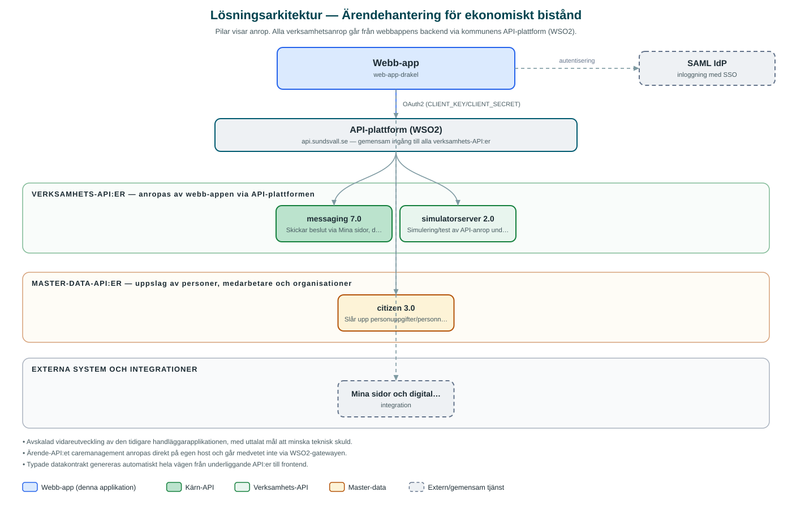

Ärendehantering för ekonomiskt bistånd
Handläggarapplikation för ärenden om ekonomiskt bistånd, med stöd för normberäkning, beslut och digitala utskick av beslut.
Om applikationen
Tjänsten är en handläggararbetsyta för ärenden inom ekonomiskt bistånd (försörjningsstöd). Handläggaren kan lista och filtrera ärenden, se ärendedetaljer med parter och kontakter, hantera bilagor, föra journalanteckningar och registrera beslut.
Inbyggda beslutsfraser enligt socialtjänstlagen underlättar att formulera bifall och avslag, och en normberäkningsfunktion hanterar hushållets personer, inkomster och utgifter som underlag för beslut. Fattade beslut kan skickas digitalt till den enskilde via Mina sidor, digital brevlåda eller brev, med automatisk kontroll av om mottagaren har digital brevlåda.
Applikationen är en avskalad vidareutveckling av kommunens tidigare handläggarapplikation, ombyggd mot ett nyare ärende-API. Utvecklingen sker stegvis och all funktionalitet från föregångaren är ännu inte på plats.
Det här stödjer applikationen
- Ärendelista med filtrering – Överblick över ärenden med filtrering på kategori, status och typ.
- Normberäkning – Beräkningsstöd för hushållets personer, inkomster och utgifter inför beslut om ekonomiskt bistånd.
- Beslut med frasbibliotek – Registrera bifall och avslag med färdiga beslutsfraser enligt socialtjänstlagen.
- Digitalt utskick av beslut – Skicka beslut till Mina sidor, digital brevlåda eller som brev, med kontroll av digital brevlåda.
- Journal och bilagor – För journalanteckningar och hantera dokument och bilagor i ärendet.
Teknisk dokumentation
Nedan beskrivs hur applikationen är uppbyggd, vilka API:er den använder och vad som krävs för att driftsätta den. Informationen är härledd ur källkoden och dess konfiguration på GitHub.
Arkitektur

Applikationen består av en webbaserad frontend (Next.js 16, React 19, sk-web-gui) och en backend (Node.js med Express 5 och routing-controllers (TypeScript, BFF)) som utvecklas i samma kodbas. Verksamhetsanrop går via kommunens gemensamma API-plattform (WSO2) – frontend pratar aldrig direkt med underliggande system. Inloggning: SAML (SSO) med behörighetsstyrning via AD-grupper (AUTHORIZED_GROUPS). Övriga integrationer som förekommer i koden: Caremanagement-API (ärendehantering, direktanslutning utanför API-gatewayen), WSO2 API-gateway, SAML IdP, Mina sidor och digital brevlåda (via messaging-API:et).
Teknikstack
- Frontend: Next.js 16, React 19, sk-web-gui
- Backend: Node.js med Express 5 och routing-controllers (TypeScript, BFF)
- Test: Vitest och Playwright
API-beroenden
Applikationen konsumerar följande API:er via kommunens API-plattform. Versionerna är hämtade ur källkodens API-konfiguration.
| API | Version | Användning |
|---|---|---|
| messaging | 7.0 | Skickar beslut via Mina sidor, digital brevlåda och brev samt kontrollerar digital brevlåda. |
| simulatorserver | 2.0 | Simulering/test av API-anrop under utveckling. |
| citizen | 3.0 | Slår upp personuppgifter/personnummer för parter i ärendet. |
Konfiguration och driftsättning
- .env-filer för frontend och backend enligt exempel
- CLIENT_KEY och CLIENT_SECRET från WSO2-portalen för gateway-API:er
- CAREMANAGEMENT_BASE_URL för direktanslutning till ärende-API:et
- SAML-certifikat och nycklar samt AUTHORIZED_GROUPS för behörighet
Noterbart ur källkoden
- Avskalad vidareutveckling av den tidigare handläggarapplikationen, med uttalat mål att minska teknisk skuld.
- Ärende-API:et caremanagement anropas direkt på egen host och går medvetet inte via WSO2-gatewayen.
- Typade datakontrakt genereras automatiskt hela vägen från underliggande API:er till frontend.
- Repot innehåller AGENTS.md med detaljerade arbetsinstruktioner för AI-agenter och utvecklare.
Källkod
Källkoden är öppen och finns hos Sundsvalls kommun på GitHub. I källkodsförrådet finns även instruktioner för att klona, konfigurera och starta applikationen i egen miljö.